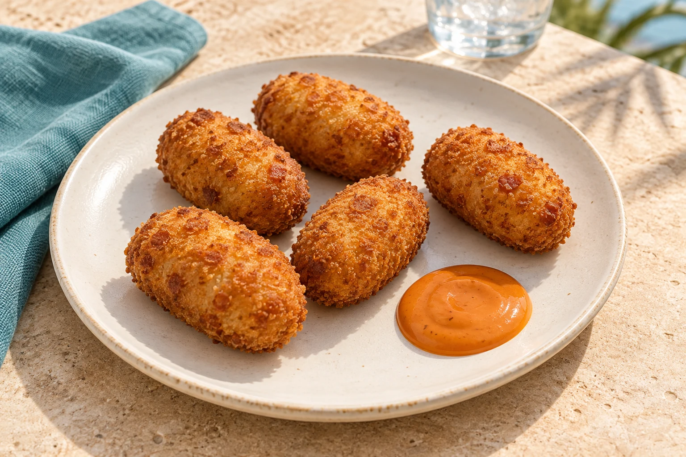
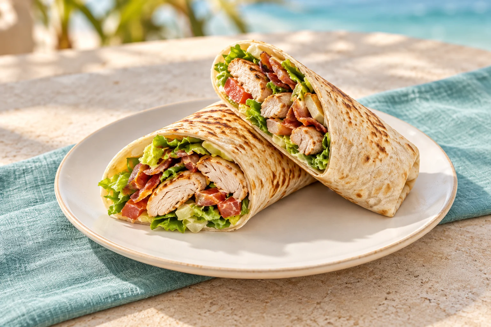

01
Tapas y Entradas
Salpicón de Pulpo y Gambas
4.00 €Tortilla de Patatas
3.70 €Boquerones en Vinagre
3.80 €Tortitas de Camarones
6.70 €Porra Antequerana
4.00 €Patatas Bravas / Patatas Alioli
3.70 €Patatas Fritas
3.90 €Huevos Rellenos
3.80 €Patatas Fritas en Gajo con Salsa al Gusto
4.30 €Mantequilla de Ajo
3.40 €Nachos Caseros con Queso Especiado y Guacamole
7.90 €Jamón de Bellota
19.80 €Aros de Cebolla
6.20 €Agios Bagel
7.00 €Nuggets con Patatas Fritas
7.30 €Sabrosa Beef Streak
10.30 €Pinchitos de Pollo
7.00 €Mini Morunos de Cordero con Yogurt y Menta
8.10 €Alitas de Pollo
7.60 €Piruleta de Langostinos Fritos en Pasta Kataifi
10.10 €Camembert Frito con Salsa de Mango
7.30 €Croquetas de Jamón
6.30 €
Keukenhof
10.50 €02
Wrap
Con patatas o ensalada +1,50 €; con patatas gajo +1,80 €.
Enrollado de Pollo, Bacon y Vegetales
8.30 €